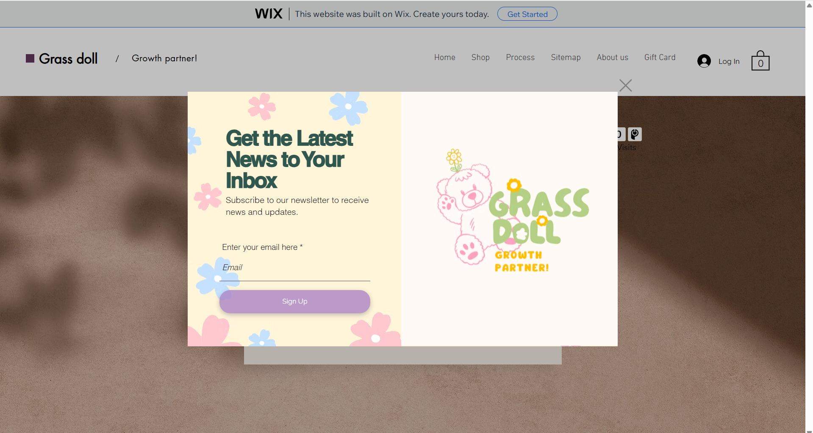
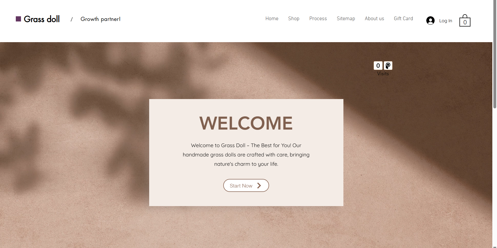
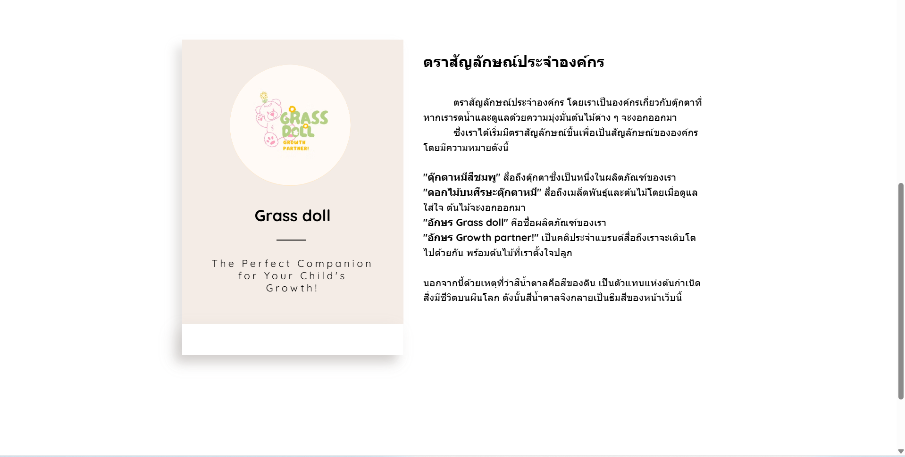
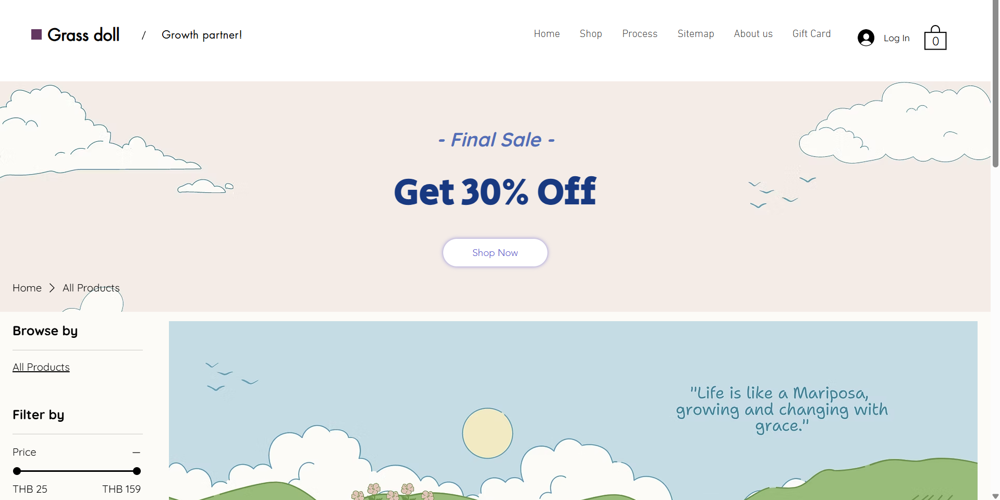
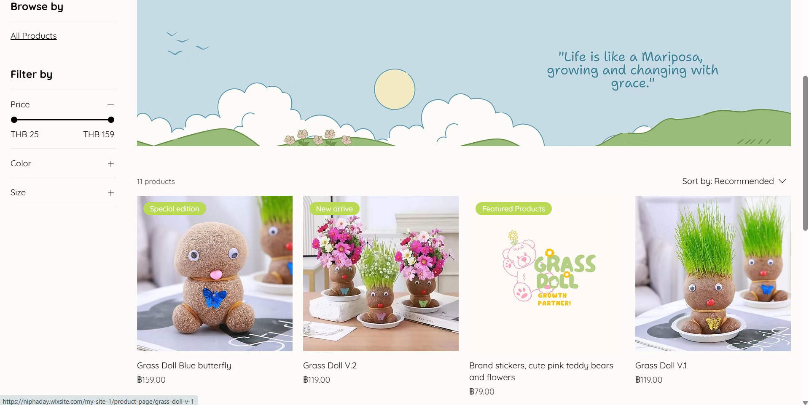
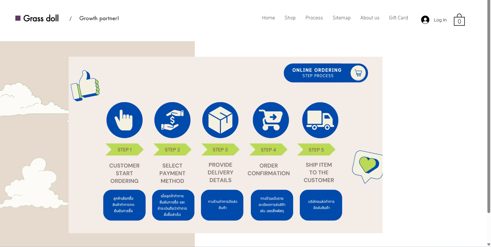
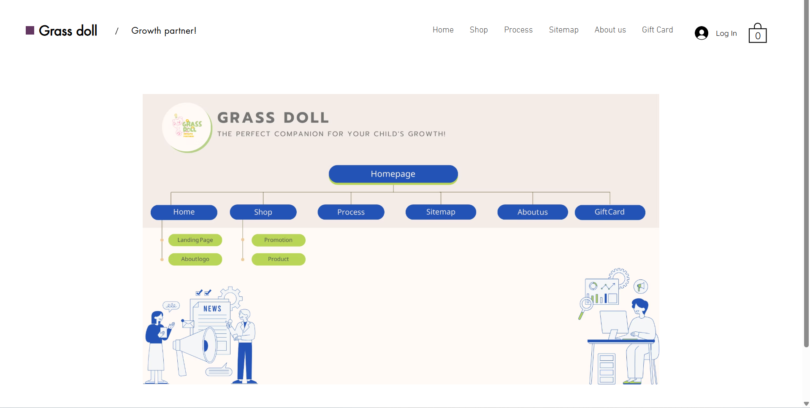
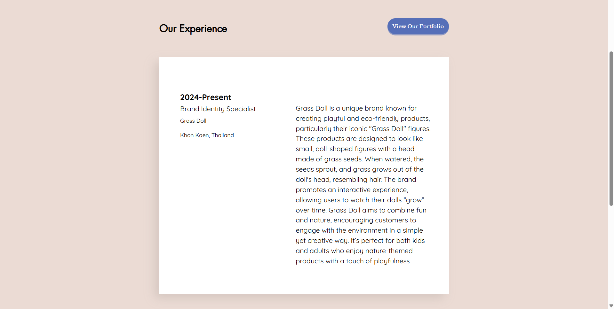
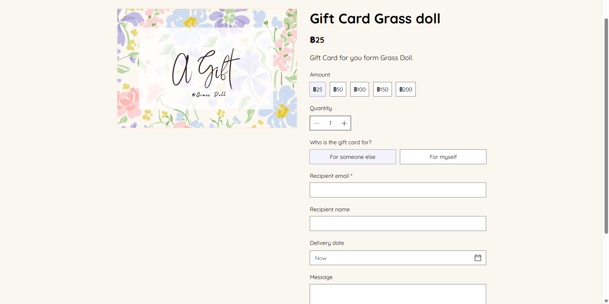

Plant Doll Shop Website
2023 • WixDesigned a simple and clean website for a plant-themed doll shop using Wix, focusing on a user-friendly layout and consistent branding for small businesses.
Visit Website here








